InCloseMail is a Windows email client for Microsoft 365 and Outlook.com that works the way classic Outlook does. It was checked against classic Outlook screen by screen, so if you reach for something out of habit, it’s where you expect it. Pick an area to see everything it does there, with pictures. For how to use each feature, see the help pages.
Classic Outlook, feature for feature
-
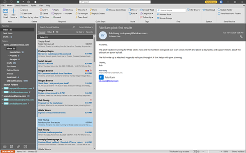
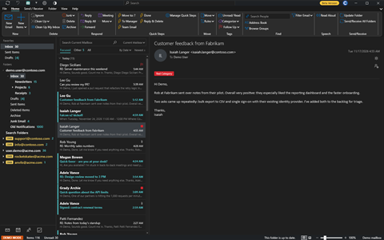
The Outlook layout The ribbon, folder pane, message list, reading pane and To-Do Bar, with Outlook’s keys and menus. -
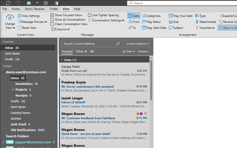
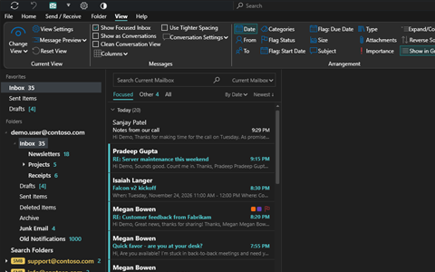
Mail Conversations, Focused Inbox, views and groups, categories and flags, Clean Up, Archive and Undo. -
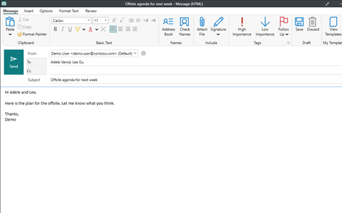
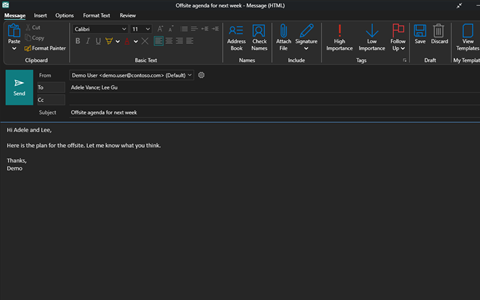
Writing and sending Signatures, Auto-Complete, formatting, Quick Parts and templates, Delay Delivery and message options. -
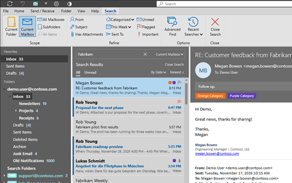
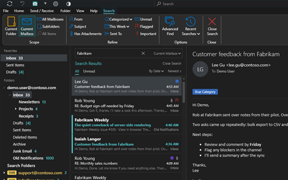
Search Instant search in a folder, the mailbox or all mailboxes, Refine, Advanced Find and Search Folders. -
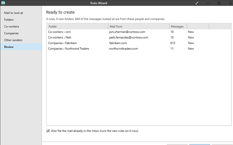
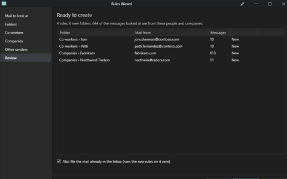
Rules and Quick Steps Rules and Alerts that run on the server, the Rules Wizard, Quick Steps, Junk Email and Automatic Replies. -
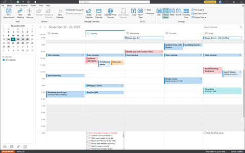
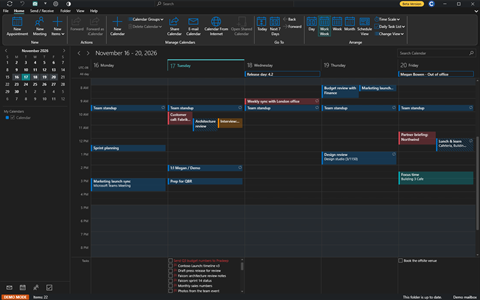
Calendar Day, Work Week, Week, Month and Schedule views, meetings, the Scheduling Assistant and shared calendars. -
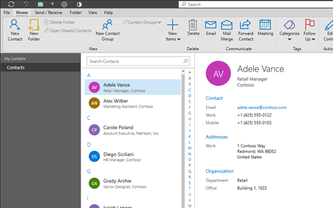
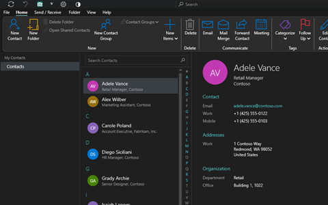
People The full contact form, People, Business Card and List views, contact groups and the Global Address List. -
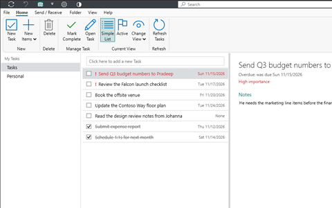
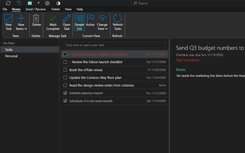
Tasks Your Microsoft To Do tasks with Outlook’s task form and views. -
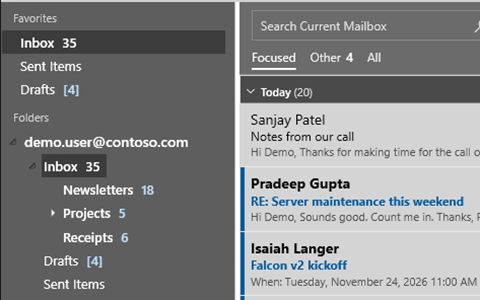
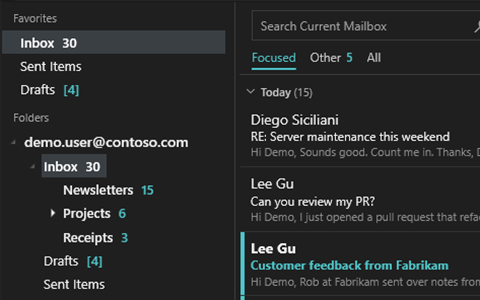
Accounts and sharing Several accounts at once, shared mailboxes with Send As, Microsoft 365 Groups, profiles and the same settings on every PC. -
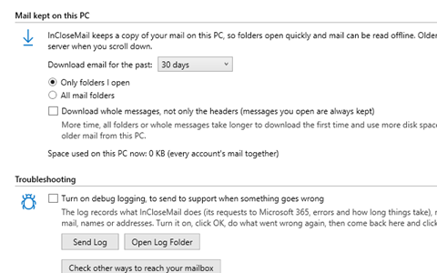
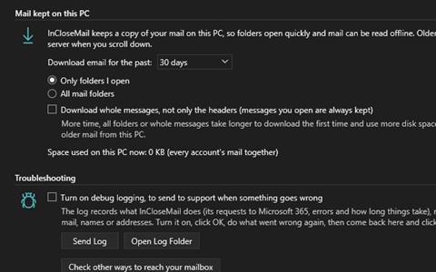
Offline and Send/Receive An encrypted copy of your mail on your PC, Work Offline, Send/Receive groups and Desktop Alerts. -
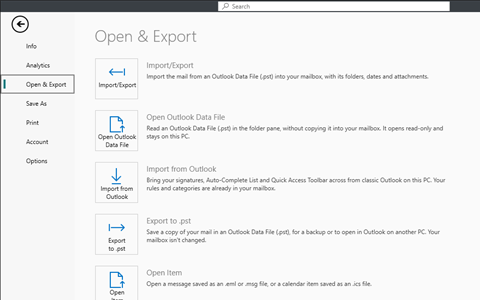
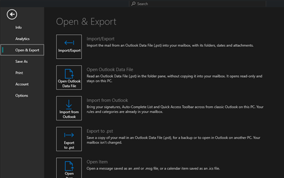
.pst files and coming from Outlook Open, import and export Outlook Data Files, and bring your signatures and Auto-Complete names from Outlook. -
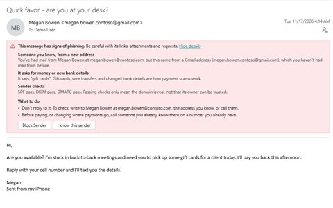
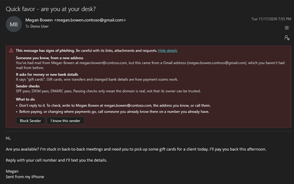
Security and privacy Plain-language phishing warnings, a second look before sending, read-only mode and S/MIME. -
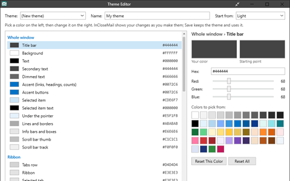
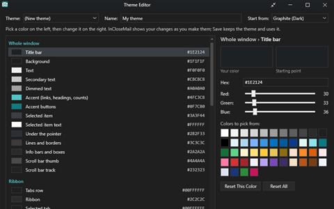
Look, language and accessibility Light, Dark, White, Gray and High Contrast, themes and the Theme Editor, ten languages and keyboard access. -
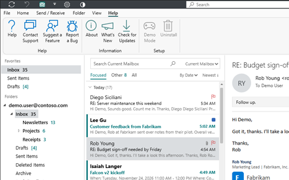
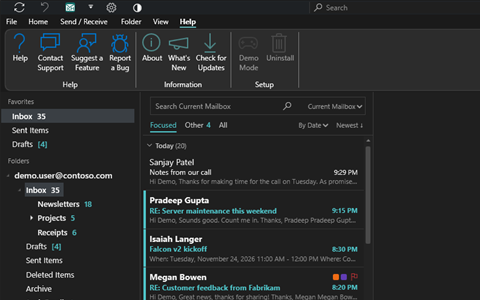
For IT, help and feedback A signed .msi, Group Policy and Intune templates, admin consent, updates from inside the app, and Report a Bug.
Only available from InCloseMail
Everything above is classic Outlook’s. These are what classic Outlook never did.
-
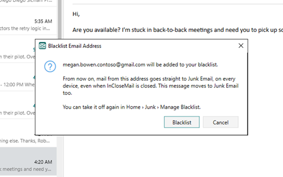
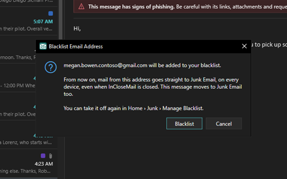
Blacklist One click and everything a sender sends from now on goes straight to Junk Email, on every device. -
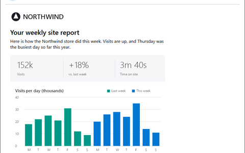
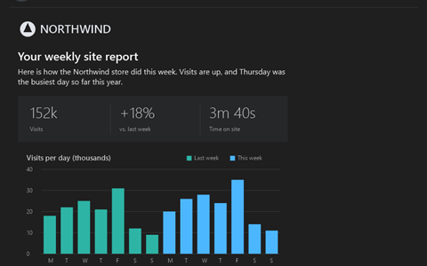
Dark Mode that reads the pictures Emailed charts and reports go dark with the message, dark logos turn light, and photos stay as sent. -
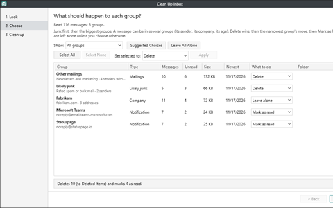
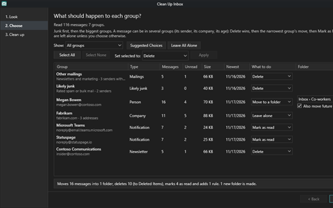
Years of mail: cleanup and organizing, with AI Sort 20+ years of mail into folders and clear out what you never needed, with one Undo. -
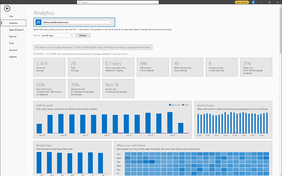
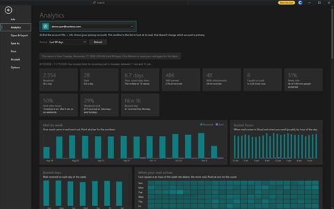
Analytics Who writes to you most, how fast you reply, your busiest hours and biggest folders, worked out on your PC. -
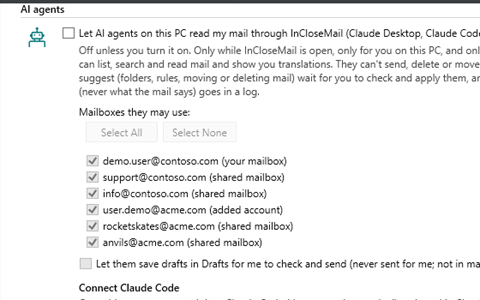
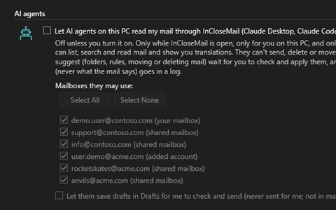
AI agents Let Claude and other AI apps read and draft mail and propose changes you approve, or copy mail as clean text for any chatbot. -
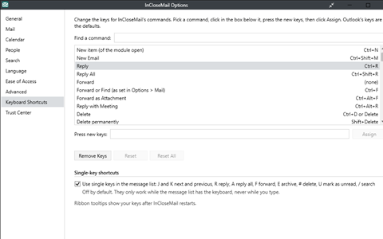
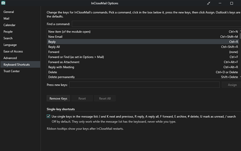
Your own keyboard shortcuts Give any command the keys you want, or turn on single keys such as J and K in the message list. -
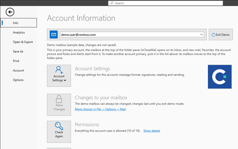
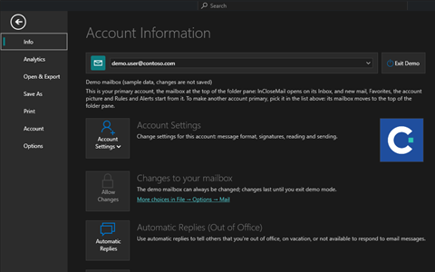
Also only here Demo Mode, a mailbox that keeps working through an outage, Lock InCloseMail and permissions in plain words.
Missing something you used in Outlook? Choose Help → Suggest a Feature in the app. Found a bug? Choose Help → Report a Bug.